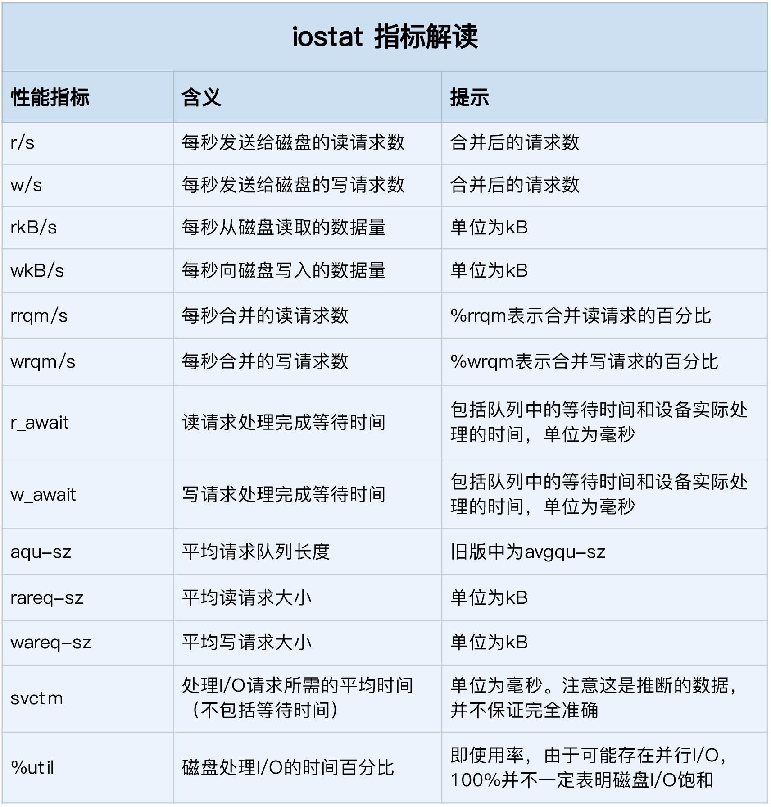

磁盘性能指标
使用率、饱和度、IOPS、吞吐量以及响应时间等。这五个指标，是衡量磁盘性能的基本指标。
- 使用率，是指磁盘处理 I/O 的时间百分比。过高的使用率（比如超过 80%），通常意味着磁盘 I/O 存在性能瓶颈。
- 饱和度，是指磁盘处理 I/O 的繁忙程度。过高的饱和度，意味着磁盘存在严重的性能瓶颈。当饱和度为 100% 时，磁盘无法接受新的 I/O 请求。
- IOPS（Input/Output Per Second），是指每秒的 I/O 请求数。
- 吞吐量，是指每秒的 I/O 请求大小。
- 响应时间，是指 I/O 请求从发出到收到响应的间隔时间。
- 性能测试工具 fio
磁盘 I/O 观测
iostat 是最常用的磁盘 I/O 性能观测工具，它提供了每个磁盘的使用率、IOPS、吞吐量等各种常见的性能指标，这些指标实际上来自 /proc/diskstats。

关注项：
- %util ，就是我们前面提到的磁盘 I/O 使用率；
- r/s+ w/s ，就是 IOPS；
- rkB/s+wkB/s ，就是吞吐量；
- r_await+w_await ，就是响应时间。
进程 I/O 观测
要观察进程的 I/O 情况，你还可以使用 pidstat 和 iotop 这两个工具。